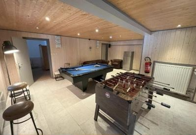
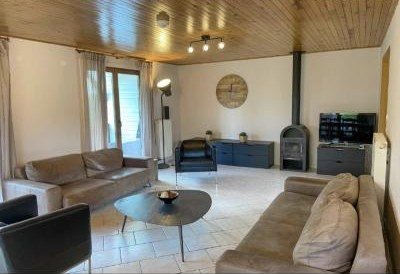

Le Bercail (Somme-Leuze)
Vakantiehuis voor 7 volwassenen en 5 kinderen, 3 niveaus



Plaats 2 in mijn voorkeur. Iedereen onder één dak met een kamer over. Nadeel: het zwembad is niet omheind, score 7,5, 2 badkamers, en op zondag al voor 10u weg. Met peuters moet er altijd iemand bij het water.
Zwembad. Buitenzwembad, privé, seizoensgebonden. Niet omheind: het ligt open in de tuin (zichtbaar op de foto's). Afmetingen niet vermeld.
Animatie
In en rond het huis
- Buitenzwembad
- Sauna
- Biljart
- Tafelvoetbal
- Speeltuin
In de buurt (afstand vanaf het huis)
- Woody Up (7 km)
- Treetop Park (13 km)
- Parc des Topiaires in Durbuy (14 km)
- Labyrint van Barvaux (16 km)
- Avonturenpark Durbuy (17 km)
Kamerindeling
Ja, alle 3 samen in kamer 5 (2 eenpersoonsbedden + tweepersoonsbed).
| Waar | Kamer | Wie |
|---|---|---|
| Niveau niet vermeld | Slaapkamer 5 (2 eenpersoonsbedden + tweepersoonsbed) | Nora, Odiel en Lowie |
| Niveau niet vermeld | Slaapkamer 1 (groot tweepersoonsbed) | Kjell en Eveline + baby (babybed op verzoek) |
| Niveau niet vermeld | Slaapkamer 3 (tweepersoonsbed) | Jeroen en Kelly |
| Niveau niet vermeld | Slaapkamer 4 (tweepersoonsbed) | Tine |
| Niveau niet vermeld | Slaapkamer 2 (eenpersoons- + groot tweepersoonsbed) | Patrick en Roos |
| Niveau niet vermeld | Slaapkamer 6 (2 eenpersoonsbedden) | Vrij |
Kosten voor 2 nachten
2 nachten, vr 2/7 tot zo 4/7
| Prijs Booking, incl. belastingen | €1.787 |
| Energie (gas en elektriciteit) | volgens verbruik |
| Bedlinnen huren (optioneel, €12,50 p.p.) | €125 voor 10 pers. |
| Handdoeken huren (optioneel, €8 p.p.) | €80 voor 10 pers. |
| Totaal | €1.787 |
| + energie volgens verbruik | |
Wie betaalt wat
| Per volwassene (1/8) | €223,38 |
| Per kind (1/24) | €74,46 |
| Jeroen, Kelly, Nora en Odiel (2 volw. + 2 kinderen) | €595,67 |
| Roos (1 volw.) | €223,38 |
| Patrick (1 volw.) | €223,38 |
| Kjell, Eveline, Lowie en baby (2 volw. + 1 kind, baby gratis) | €521,21 |
| Tine (1 volw.) | €223,38 |
Plus energie volgens verbruik, te verdelen op dezelfde manier.
Waarborg en verplichtingen
Waarborg: €1.000, niet inbegrepen in de totaalprijs.
- Niet-terugbetaalbaar tarief. Vooraf betalen via overschrijving.
- Waarborg van €1.000 via overschrijving 7 dagen voor aankomst, terug binnen 14 dagen na vertrek. De energie wordt van de waarborg afgehouden.
- Bedlinnen en handdoeken zelf meebrengen of ter plaatse huren.
- Inchecken tussen 16u en 21u, uitchecken zondag voor 10u.
- Geen feesten. Er hangt een decibelmeter. Minimumleeftijd om in te checken: 20 jaar.
Verder: 6 slaapkamers, 2 badkamers, sauna, biljart, tafelvoetbal, speeltuin, balkon.
Let op: Het zwembad is niet omheind. Je kunt niet annuleren, de energie komt er nog bij en op zondag moet je al voor 10u weg.
Bron: Booking.com, prijs voor 11 personen, nagekeken op 27/11/2026.